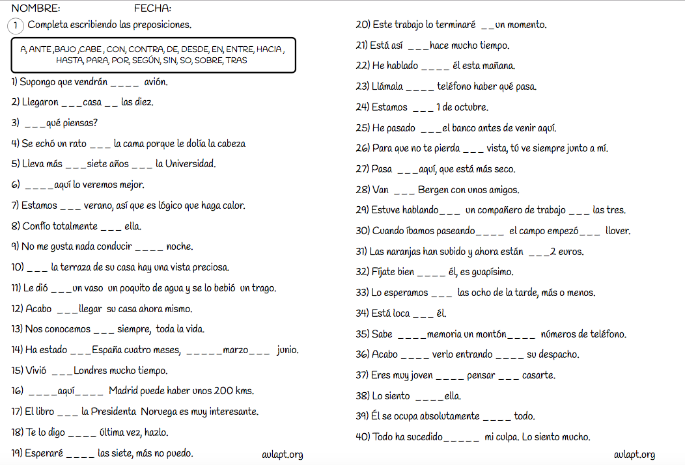
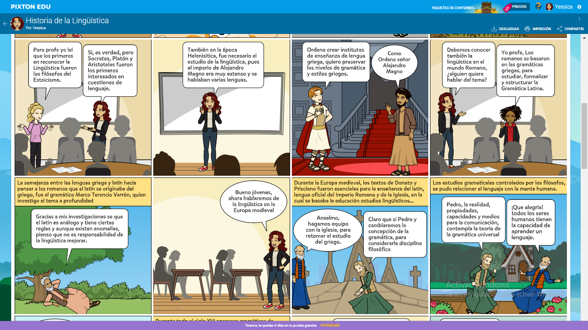

Unidad 2_ paso 4 Ejecución: Identificar, ejemplificar y participar.
Tutor/a: Yenny Milena Cortes
Estudiantes:
Diana Marcela Delgado Ortega
Yessica maryury mateus
Angie Ardila Parra
Grupo: 518003_4
Universidad Nacional Abierta y a Distancia UNAD
Escuela Ciencias de la Educación
Licenciatura en lenguas extranjeras con enfasis en inglés
Lengua Materna 518003
Bucaramanga, 2 De Marzo De 2020
INTRODUCCIÓN
El siguiente trabajo ha sido elaborado con el fin de dar a conocer el concepto de lingüística y de las categorías que la componen por medio de actividades pedagógicas que permitan su conocimiento, entendimiento y práctica, teniendo como base que la lingüística es quizás uno de los pilares más fundamentales en el desarrollo de los seres humanos, ya que estudia la estructura del lenguaje nuestro, así como el aprendizaje y dominio de segundas lenguas en niños y adultos. Compuesta por: Historia de la lingüística, ramas de la lingüística, categorías lingüísticas: el sustantivo: género y número, el adjetivo. Los determinantes, Los pronombres Los verbos, Las preposiciones. Las conjunciones, los adverbios. A continuación, se presenta una historieta y una actividad de pasatiempo referente a los temas abordados.
OBJETIVO GENERAL
Generar aprendizaje autónomo en las personas para que apropien y apliquen los conocimientos adquiridos en el desarrollo de las estrategias pedagógicas propuestas sobre la lingüística, los verbos y las preposiciones.
Estrategias pedagógicas de cada estudiante:
Diana marcela delgado
INSTRUCCIONES PARA JUGAR…
- Tendremos muchas tarjetas como estas, cada una con la imagen representativa de un verbo o acción.
- Se ubican las tarjetas boca abajo, es decir, que no se vean las imágenes.
- De acuerdo con el turno, cada integrante del juego irá tomando una tarjeta, la observará y pensará en una preposición que pueda acompañar este verbo o acción.
- Posteriormente, formará y compartirá con el resto de los participantes una frase que incluya el verbo que indica su tarjeta y la preposición que puede acompañarla.
Por ejemplo:
Caminar... = caminar EN
disfruta caminar en el parque junto con su madre y su mascota.
ACTIVIDAD DE APLICACIÓN
Diana marcela delgado
Angie Ardila
Taller Práctico
Objetivos
- Que el estudiante entienda que es un sustantivo y un adjetivo.
- Que el estudiante logre corregir los errores gramaticales más frecuentes con respecto al uso de los sustantivos y adjetivos.
- Que el estudiante practique la forma correcta de usar el sustantivo y adjetivo.
Información de los participantes:
Estudiantes de primer grado de bachillerato del curso de español.
Métodos de enseñanza:
Se explica a los estudiantes por medio de una presentación del profesor con ayuda audiovisual ya sea en el tablero o por medio de diapositivas. Se explica la clase en el siguiente orden:
- ¿Qué es un sustantivo?
Es una categoría gramatical o una clase de palabra que es utilizada para nombrar un objeto o un sujeto.
Se abordarán los errores gramaticales más frecuentes en su utilización. Específicamente del sustantivo se hablará sobre género y numero, porque son una fuente importante de dudas y arbitrariedades.
- Sustantivo género y numero:
Genero:
Profesión:Para la profesión se debe aplicar en femenino Ejemplos: la jueza, la médica, la concejala, la tenienta.
Se debe prestar especial atención a los nombres cuyo género es distinto al que aparenta ejemplos: El modista, el logopeda, el periodista.
Geográficos:Algunos lugares geográficos se nombran en masculino como mares, océanos, ríos y montes. Ejemplos: el mediterráneo, el atlántico.
Algunos otros lugares geográficos son femeninos como las cordilleras, comarcas y sierras.
Ciudades o pueblos:Para nombrar las ciudades o pueblos el género no está claro puede ser masculino o femenino.
Hay ciertos géneros que no son marcados en la terminación comoEl común: que se refiere a personas Algunos ejemplos son el/la testigo, el/la fiscal, la logopeda, la ayudante.
El epiceno: que se refiere a animales algunos ejemplos son la rata, la araña.
El ambiguo: Es decir el común. El/la Azúcar.
Numero:
Abordaremos el plural de los sustantivos latinos, los sustantivos importados de idiomas modernos, los apellidos, los sustantivo compuestos, los sustantivos invariables, las siglas y abreviaturas, los nombres de letras y notas musicales.
Plurales sustantivos latinos:Los sustantivos latinos se deben poner en plural si y solo si se pasan a español. De lo contrario si quedan en el idioma latín se deben usar singular. Ejemplos:
currículo(curriculum) → currículos
referendo(referéndum) → referendos
Plurales sustantivos importados de idiomas modernos:1. extranjerismos que se han resuelto con su adaptación española ejemplos
(standard) estándar- estándares
(carnet) carne-carnes
2. Algunos casos conservan el plural de la lengua que importan,ejemplos:
Chandals
Comics
Anoraks
3.reglas del plural a la forma extranjera:
Álbum → Álbumes
club → clubes
ApellidosArticulo gramatical son palabras como → el, los, las, una, unos
La forma plural se manifiesta mediante el articulo
Los manchados, los Álvarez, los quinteros
Excepciones a la norma:
Los borbones, las goyas
Sustantivos agudos con acento tónico:Esquí-esquís
Bisturí-bisturís
Excepciones(gentilicios) israelís ejemplos:Israelí → israelís
Sefardí → Sefardíes
vacilaciones (la lengua escrita sigue prefiriendo el plural en es)
colibrí/colibríes
sustantivos compuestos:la forma plural debe aparecer solo en el primer componente ejemplo: coches cama, novelas rosas
excepciones: guardias civiles, casas cuarteles, malos tratos
sustantivos invariables:solo se usan en singular o solo en plural. Ejemplos: salud, norte (solo en singular)
afueras, alicates (solo en plural)
las letras y notas musicales tienen un plural establecidos:
a-aes, e-es , i-is, o-oes, u-úes,b-bes,c-ces.
Adjetivo
Abordaremos el género y numero, nos enfocaremos en el adjetivo calificativo, periodicidad y puntos cardinales. Haremos énfasis en el buen uso del adjetivo en su grado comparativo y superlativo.
Genero y numero del adjetivo:
Flexión de género y numero: Hay adjetivos que encajan perfectamente en los dos géneros masculino y femenino. Se usan frecuentemente en uno de los dos géneros ejemplos El autodidacta
Hay formas que saltan entre ora y tris comoFuerza motora/fuerza motriz
Se debe tener cuidado en sustantivos que tienen flexión de genero y aun así terminan en es
francés → francesa
Adjetivos calificativos:
Deben evitarse los rimbombantes e innecesarios como el drástico suceso ocurrirá a las dos de la mañana
Adjetivos de puntos cardinales:
Algunos habitantes Se inclinan por la forma sin d como
Norteño-nórdico
Excepciones: sudamericano/sudafricano
Grados del adjetivo:
Grado comparativo son correctas las formas
Peor, mejor, mayor, menor que, inferior, superior, anterior, posterior
Son incorrectas las formas
Mas alto como
De mas que
Mas mejor
Superlativas
- Se deben evitar los acabados en isimo como Proximisimo
- Hay adjetivos que no admiten el grado superlativo sea por su significado o por ser gentilicios o porque expresan relación y profesión ejemplo: primerísimo, muy último, muy principal.
- Hay un uso incorrecto en el caso de los superlativos que es la unión entre superlativos y comparativos ejemplos Muy grandísimo, Tan aburridísimo.
Actividades:
Que los estudiantes realicen el siguiente quiz de manera grupal y se retroalimente después de su realización
1. Que género es correcto de utilizar en las siguientes profesiones
| a | La jueza, la médica, la tenienta |
| b | La juez, la médico, la teniente |
2. Que genero es correcto usar en términos geográficos
| a | el mediterráneo,el atlantico |
| b | El meditarranea, el atlantica |
3. Los sustantivos latinos se deben usar en plural. Pase los sustantivos de singular a plural
a. Currículo
b. Referendo
4. Escriba el plural de los siguientes sustantivos importados de idiomas modernos
a. Carne
b. Estándar
5. Es esto correcto en este sustantivo
v/f-frances → francés
6. Es esto correcto
v/f más alto como
v/f más mejor
7. Es esto correcto
v/f muy grandísimo
v/f muy aburridísimo
Conclusiones
Por medio de la elaboración de este trabajo se pudo adquirir los conocimientos requeridos acerca de la lingüística siendo esta una disciplina que permite entender el origen científico, la evolución a través de la historia y la estructura del lenguaje, además estudiar sus diferentes componentes, los cuales son unidades lingüísticas que pueden ser percibidas por el ser humano mediante los sentidos y experiencias que permiten representar eventos comunicativos.
Se logra reconocer e implementar diferentes estrategias pedagógicas y tecnológicas como recursos prácticos para la motivación y facilidad en el desarrollo de actividades de aprendizaje.
El desarrollo de habilidades y estrategias de lectura, permite una facilidad en el análisis y la identificación de cada uno de los aspectos a resaltar en el contenido de la lectura, de esta manera contribuye en la apropiación, producción y desarrollo de la actividad.
La distribución del tiempo en la elaboración de las actividades permiten que se logre un mejor aprendizaje, aprovechando cada uno de las estrategias y acompañamientos que nos brinda el programa, permitiendo despejar dudas y aceptando sugerencias tanto por los compañeros de curso como por el Tutor.
Referencias
Varo, V. C., Paredes, D. M. J., & Escoriza, M. L. (2012). Usos y normas de la comunicación escrita. Recuperado de: https://ebookcentral-proquest-com.bibliotecavirtual.unad.edu.co/lib/unadsp/detail.action?docID=3213867
Universidad Autónoma de Hidalgo. Lenguaje y oración “la lingüística y sus ramas” (s.f) (pág. 2 -27) Universidad Autónoma de Hidalgo. Recuperado de: https://www.academia.edu/33086711/UNIDAD_1_LENGUAJE_Y_ORACI%C3